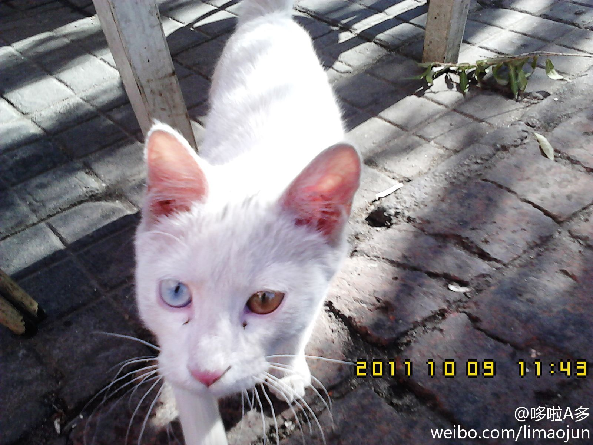
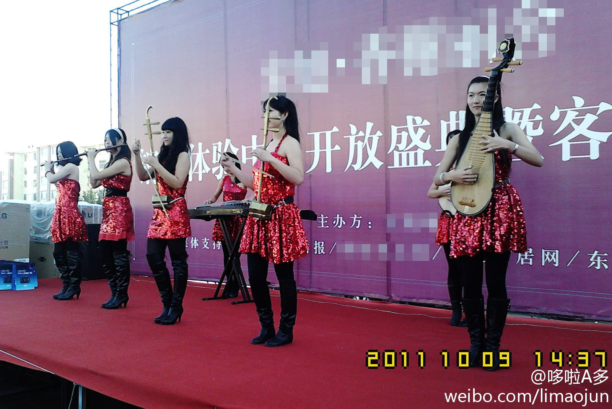

这只小猫太神奇了，一只眼睛是蓝色的，另一只眼睛是黄色的~为什么呢？？@蹦跶的豆 @王恩思 @Vermouth小苦 @狐誩狐語 @尘星宸sunday @不丢了 这回有图了，给你们看看这只猫~~~上次大意了~~居然忘了传图~ 
你们真不是假拉么~咋看咋不像真的，还用手机放神秘的音乐~哎，真替你们担心，万一“表演”的时候万一来电话可怎么办？求鉴定，这到底是真的还是假的。@方小太爷 @Vermouth小苦 @不丢了 @橘斋乱葬 @善良的王政 @raiclebaby @戏剧赵峰 